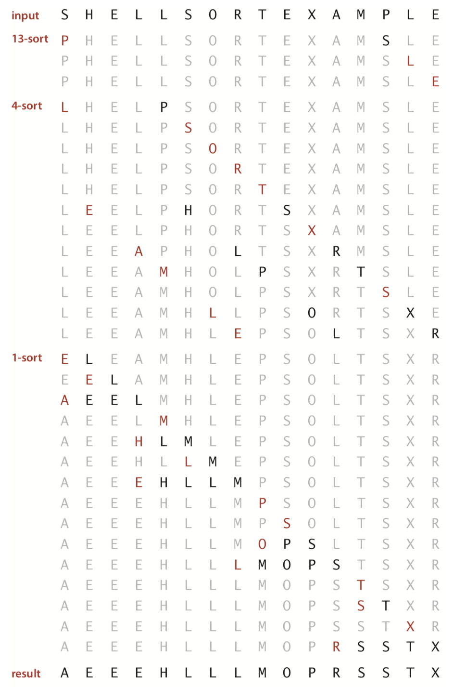
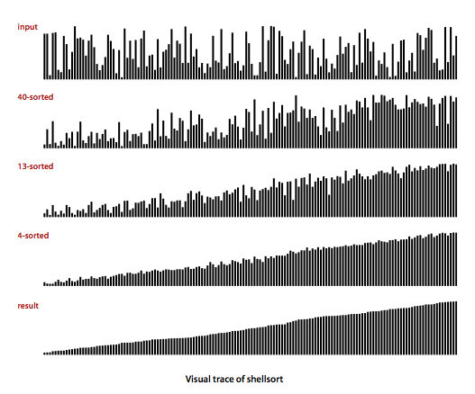

Elementary Sorts
In this section, we shall study two elementary sorting methods (selection sort and insertion sort) and a variation of one of them (shellsort).
§ Rules of the game.
Our primary concern is algorithms for rearranging arrays of items
where each item contains a key.
The objective is to rearrange the items such that their keys
are in ascending order.
In Java, the abstract notion of a key is captured in a built-in
mechanism—the Comparable interface.
With but a few exceptions, our sort code refers to the data only through two
operations: the method less() that compares objects and the
method exch() that exchanges them.
private static boolean less(Comparable v, Comparable w) { return (v.compareTo(w) < 0); } private static void exch(Comparable[] a, int i, int j) { Comparable swap = a[i]; a[i] = a[j]; a[j] = swap; }
- Sorting cost model. When studying sorting algorithms, we count compares and exchanges. For algorithms that do not use exchanges, we count array accesses.
- Extra memory. The sorting algorithms we consider divide into two basic types: those that sort in place (no extra memory except perhaps for a small function-call stack or a constant number of instance variables), and those that need enough extra memory to hold another copy of the array to be sorted.
- Types of data.
Our sort code is effective for any type of data that implements Java's
Comparable
interface.
This means that there is a method
compareTo()for whichv.compareTo(w)returns an integer that is negative, zero, or positive when v < w, v = w, or v > w, respectively. The method must implement a total order:- Reflexive: for all v, v = v.
- Antisymmetric: for all v and w, if (v < w) then (w > v); and if (v = w) then (w = v).
- Transitive: for all v, w, and x, if (v ≤ w) and (w ≤ x), then v ≤ x.
In addition,
v.compareTo(w)must throw an exception ifvandware of incompatible types or if either isnull.Date.java illustrates how to implement the
Comparableinterface for a user-defined type.
§ Selection sort.
One of the simplest sorting algorithms works as follows: First, find the smallest item in the array, and exchange it with the first entry. Then, find the next smallest item and exchange it with the second entry. Continue in this way until the entire array is sorted. This method is called selection sort because it works by repeatedly selecting the smallest remaining item. Selection.java is an implementation of this method.

 Proposition.
Proposition.
Selection sort uses ~n2/2 compares and n exchanges to sort an array of length n.
§ Insertion sort.
The algorithm that people often use to sort bridge hands is to consider the cards one at a time, inserting each into its proper place among those already considered (keeping them sorted). In a computer implementation, we need to make space for the current item by moving larger items one position to the right, before inserting the current item into the vacated position. Insertion.java is an implementation of this method, which is called insertion sort.

Proposition.
For randomly ordered arrays of length N with with distinct keys,
insertion sort uses
~N2/4 compares and ~N2/4 exchanges on the average.
The worst case is ~ N2/2 compares and ~ N2/2
exchanges and the best case is N-1 compares and 0 exchanges.
Insertion sort works well for certain types of nonrandom arrays
that often arise in practice, even if they are huge.
An inversion is a pair of keys that are out of order in the array.
For instance, E X A M P L E has 11 inversions:
E-A, X-A, X-M, X-P, X-L, X-E, M-L, M-E, P-L, P-E, and L-E.
If the number of inversions in an array is less than a constant multiple of the array size,
we say that the array is partially sorted.
Proposition.
The number of exchanges used by insertion sort is equal to the number of inversions in the array, and the number of compares is at least equal to the number of inversions and at most equal to the number of inversions plus the array size.
Property.
For randomly ordered arrays of distinct values,
the running times of insertion sort and selection sort are quadratic and
within a small constant factor of one another.
SortCompare.java
uses the sort() methods in the
classes named as command-line arguments to perform the given number of experiments
(sorting arrays of the given size) and prints the ratio of the observed running
times of the algorithms.
§ Visualizing sorting algorithms.
We use a simple visual representation to help describe the properties of sorting algorithms. We use vertical bars, to be sorted by their heights. SelectionBars.java and InsertionBars.java produce these visualizations.

§ Shellsort.
Shellsort is a simple extension of insertion sort that gains speed by allowing exchanges of entries that are far apart, to produce partially sorted arrays that can be efficiently sorted, eventually by insertion sort. The idea is to rearrange the array to give it the property that taking every hth entry (starting anywhere) yields a sorted sequence. Such an array is said to be h-sorted.

By h-sorting for some large values of h, we can move entries in the array long distances and thus make it easier to h-sort for smaller values of h. Using such a procedure for any increment sequence of values of h that ends in 1 will produce a sorted array: that is shellsort. Shell.java is an implementation of this method.

ShellBars.java produces a visualization of shellsort.

Property.
The number of compares used by shellsort with the increments 1, 4, 13, 40, 121, 364, ... is bounded by a small multiple of N times the number of increments used.
Proposition.
The number of compares used by shellsort with the increments 1, 4, 13, 40, 121, 364, ... is O(N3/2).
Q + A
Q. The compiler gives a warning when I compile Insertion.java. Is ther any way to avoid this?
Insertion.java:73: warning: [unchecked] unchecked call to compareTo(T) as a member of the raw type java.lang.Comparable return (v.compareTo(w) < 0);
A. Yes, if you use static generics, as in InsertionPedantic.java. It leads to awkward (but warning-free) code.